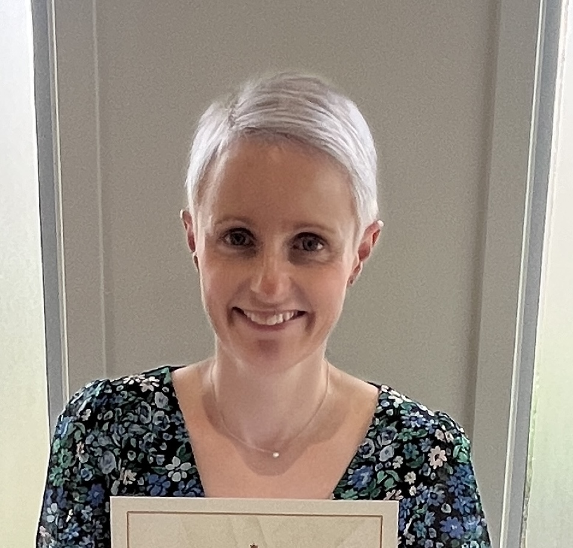

Haleigh Vinicombe - Web Developer
Hi, I’m Haleigh Vinicombe and I am an aspiring web developer. I was born in NZ and became an Australian citizen this year. I started my career as a Pharmacy Technician working across community and hospital pharmac and clinical trials. Then I started working in the superannuation industry and landed in Marketing which is what led me to web development.
After spending time on a website relaunch, I was hooked and started teaching myself. I have completed an Undergrad Certificate in Programming and now I am hoping to take my career to the next level with She Codes Plus.